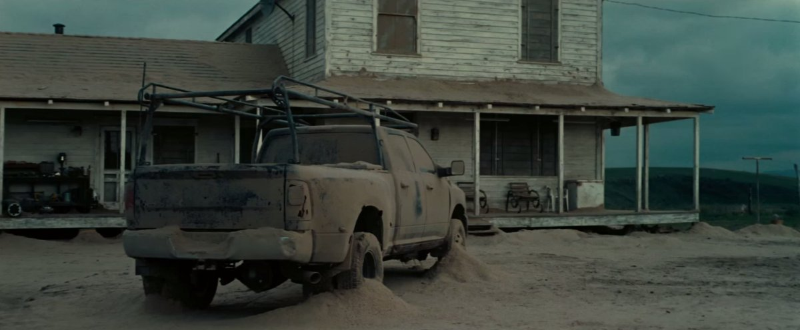
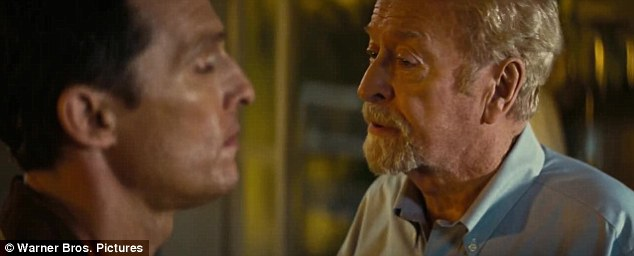

머지않은 미래인 2067년, 인류는 악화되는 기상환경과 병충해로 인하여 만성적인 식량부족 사태를 겪고 있다. 재배가 가능한 식물이 하루하루 줄어가고 있으며, 대형 모래 폭풍 때문에 사방이 흙먼지투성이이다. 국가의 기능이 약화되어 각종 정부기관들과 군대는 사라졌고, 인류가 이룩한 과학기술도 잊혀 가는 중이다. 식량 부족으로 대부분의 사람들은 농업에 종사하며, 대학에 진학하는 극소수를 제외한 모든 아이들에게 농업이 권장되고 있다.

전직 조종사 겸 엔지니어이자 현직 농부인 미국인 쿠퍼(매튜 매커너히)는 아내를 잃고 장인과 함께 아들 톰과 딸 머피를 키우며 살고 있다. 아침 식사를 하던 도중 머피는 2층 자기 방 안의 책들이 알 수 없는 이유로 떨어진다며 유령이 있는 것 같다고 말하지만 쿠퍼는 유령은 없다며 과학적인 방법으로 접근할 것을 권유한다.
학부모 상담 때문에 아이들과 함께 차를 타고 학교로 가던 쿠퍼와 아이들은 타이어에 펑크가 나 잠시 차를 세우게 되는데, 이때 이들의 머리 위로 무인기가 나타난다. 인도의 것으로 '미국과 마찬가지로 인도 쪽도 철수한 게 10년 전'이라는 쿠퍼의 말로 적어도 10년 이상 별다른 통제나 조작 없이 날고 있었던 것임을 알 수 있다. 흥분한 쿠퍼는 펑크난 차를 수리도 않고 열심히 몰고 달리며 해킹으로 무인기를 착륙시켜 그 안의 부품을 획득한다.
아이들과 학교에 도착한 쿠퍼는 아이들의 담임선생님들을 만난다. 톰의 담임선생님은 톰이 대학에 들어가기보다는 농부가 되는 것이 좋겠다고 말한다. 머피의 담임선생님은 머피가 학교에 아폴로 탐사선의 달착륙에 대한 책을 가져와 달착륙이 실제로 일어난 일이라고 주장해 싸움을 일으켰다고 한다. 이 때 쿠퍼는 "인류가 달에 갔다는 사실을 믿지 않는다구요?" 라며 황당해한다. 학생들을 오직 농업에만 집중시키기 위해 학교에서 달착륙 등 환상을 심어줄 수 있는 이야기는 모조리 거짓이라 가르치고 있던 것.
그날 오후 쿠퍼는 고장난 트랙터를 수리하고, 머피의 방에서는 또다시 중력 이상 현상으로 책이 떨어진다.
이후 4월 15일, 쿠퍼 가족은 뉴욕 양키스와 오클랜드 애슬레틱스 간의 야구 경기를 관람하러 간다. 쿠퍼의 장인은 이제 옥수수밖에 재배하지 못해 파는 간식이 팝콘밖에 없다며 불평한다. 한창 경기가 진행되던 도중 불어닥친 대형 모래폭풍에 사람들은 집으로 돌아간다. 마찬가지로 집으로 돌아온 쿠퍼 가족은 미처 창문을 닫지 않았던 2층 머피 방에 엄청난 모래가 쏟아들어온 것을 확인한다. 그런데 쿠퍼와 머피는 중력의 이상 작용으로 모래가 일정한 패턴으로 떨어져 있는 것을 보게 된다.
그 모래를 2진법으로 분석한 끝에 쿠퍼는 특정 장소의 좌표를 알아내 그곳으로 출발하는데, 이때 머피도 몰래 차에 탑승한다. 야밤에 도착한 그곳은 철조망으로 길이 막혀 있었고, 쿠퍼가 절단기로 철조망을 절단하려는 순간 서치라이트 불빛이 쏟아지며 위협적인 목소리와 함께 둘은 내부로 잡혀 들어간다. 이후 쿠퍼는 로봇 타스(Tars)에게 심문을 받고, 아멜리아 브랜드(앤 해서웨이)박사를 만난다. 그곳은 로켓 발사장이자 연구센터였으며 정부가 비밀리에 과거 NORAD의 본부가 있었던 샤이엔산 지하에 NASA를 재결성한 것이었다. 쿠퍼 부녀는 그 일원들과 전에 같이 일했던 물리학자인 존 브랜드(마이클 케인) 박사를 만나게 된다. NASA 소속의 파일럿이었던 쿠퍼에게 딸 아멜리아와 다른 연구원들을 소개한 브랜드 박사는 NASA에서 비밀리에 추진중인 '라자로 프로젝트(Lazarus Project)'에 대해 알려준다.
브랜드 박사의 설명에 따르면 48년 전 토성 근처에 웜홀이 출현했으며 이를 통해 지구상에서 간헐적으로 중력 이상 현상이 발견되었다. 이 중력 이상 현상은 쿠퍼도 겪은 적이 있는데, 처음 악몽으로 등장하는 추락 장면의 원인이 이 중력 이상이었다. 웜홀은 일반적으로는 열리지 않고, 더군다나 원래 토성 근처에 존재하지도 않았다. 때문에 나사에서는 이 웜홀이 멸망 위기를 맞은 인류, 하지만 현재로선 항성간 여행이 불가능하다는 한계를 가진 인류를 '살 수 있는 행성'들로 초대하려는 누군가가 의도적으로 열어 준 것이라는 가설을 세우고 탐사선을 보낸다. 그것이 라자로 프로젝트로 탐사선을 보내 인류를 구원하기 위해 웜홀을 통해 다른 은하계에서 인류가 살 수 있는 행성, 혹은 방법을 찾게된다. NASA에서는 이미 무인탐사선을 보내서 12곳을 추려냈고, 이를 바탕으로 12명의 유인선발대가 떠났으며 유인선발대가 보내준 통신으로 어느 정도 인류가 살 가능성이 있는 행성 3개를 추려내는 데 성공했다.
존 브랜드 박사가 인류를 구하는 방법으로 세운 계획에는 플랜 A와 B가 있었다. 플랜 A는 웜홀을 통해 얻은 '중력을 제어할 수 있는 중력 방정식'을 응용해 우주선을 쏘아 인류를 태우고 해당 행성으로 가는 것이다. 이 우주선은 NASA 기지 그 자체로 즉, 물체를 아래로 잡아당기는 지구의 중력을 제어해서 현재의 물리적 발사 기술로는 궤도로 올리지 못할 무거운 물체들을 적은 힘으로도 날릴 수 있게 하는 것이다. 하지만 중력방정식은 아직 해답이 제대로 나오지 않았기에 가능할지를 장담할 수 없는 플랜이었다. 플랜 B는 500여 개의 수정란을 쏘아 보내 새로운 행성에서 인류를 재건한다는 계획이었다. 이 경우에는 현재 지구상에 살고 있는 인류는 모두 지옥 같은 지구에 남은 채로 사망할 수밖에 없다. 중력방정식이 아직 완성되지 않은 상황이기 때문에, 인듀어런스 호는 우선 3개의 행성을 탐사하고 복귀하는 것을 목표로 하되 여의치 않을 경우 가져가는 수정란들로 인류를 재건하는 것을 목표로 삼았다.

브랜드 교수는 숙련된 파일럿인 쿠퍼가 우주선의 조종을 맡아주길 부탁한다. 한참동안 우주비행 자체가 없었기에 '성층권도 겨우 벗어나 본'[6] 쿠퍼가 이 시점의 NASA에겐 시뮬레이터라도 벗어나 본 최고의 베테랑이 되어버렸다. 작중에서 이럴때를 대비해 훈련을 했다고 나온다. 갑작스러운 제안에 황당한 쿠퍼였지만, 인류에게 남겨진 시간이 얼마 남지 않았다는 것을 알게된다 브랜드 교수는 마지막 남은 옥수수마저 곧 멸종 될 것임을 보여주며 쿠퍼의 딸, 머피 세대가 인류의 마지막 세대가 될 것이라고 한다. 질소와 산소를 소모하는 생물들에 의한 병충해로 인해 농업은 불가능해지고, 결국 대기중의 산소마저 줄어들어 인간의 호흡마저 곤란한 상황이 오리라는 것. 이제 쿠퍼는 자식과 인류를 구하기 위해 이 프로젝트에 합류를 결심하게 된다.
우주선 인듀어런스 호의 출발을 앞두고, 머피는 아버지가 자신을 떠나 끝내 돌아오지 않을 거라는 슬픔과 두려움에 쿠퍼를 외면한다. 마침내 떠나기 직전 머피의 방에 들어간 쿠퍼는 딸을 끌어안고 자신의 것과 닮은 시계를 주며 꼭 돌아올 것이라 약속을 한다. 자신이 빛에 가까운 속도로 이동한다면 상대성 이론에 의해 비슷한 나이가 된 서로를 만나볼 수 있을 것이며, 그때 두 시계의 시간 차이가 얼마나 나는지 비교해보자는 것이었다. 하지만 머피에게 그 말은 도리어 그 약속이 얼마나 기약할 수 없는 것인가를 드러내는 것에 불과했다. 머피는 떨어진 책들의 배열에서 '가지 말라(STAY)'는 신호를 찾아냈다고 외치지만 쿠퍼는 그 말을 뒤로 하고 방을 나선다. 그때 다시 책장에서 책이 한 권 떨어진다. 하지만 쿠퍼는 이를 무시하고 결국 집을 떠나 인듀어런스 호를 타고 우주로 향한다.